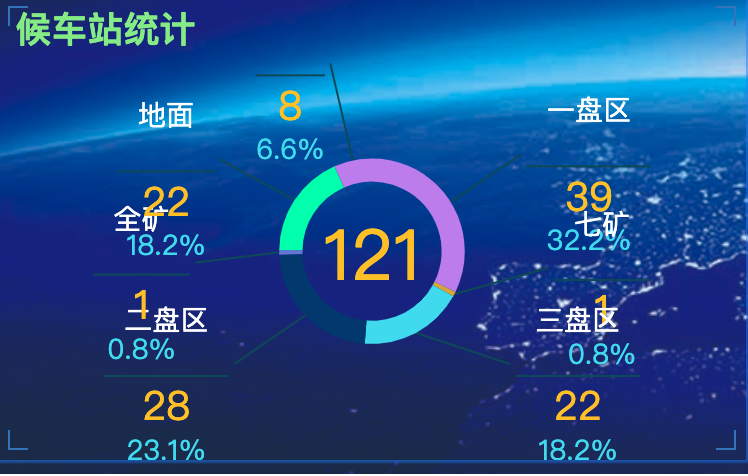
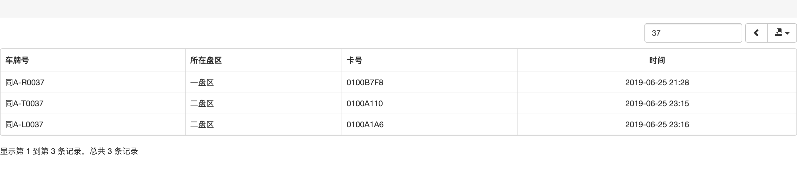
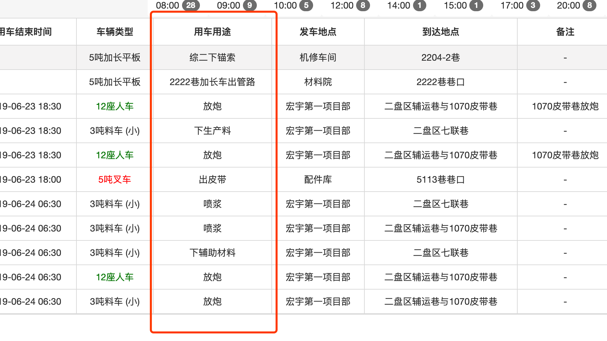

服务端


[x] 根据车辆定位数据，掌握车辆行驶轨迹，判断车辆是否到达指定目的地
根据用车申请制定趟数确定任务是否完成。
1
2喷浆、铺底类型从输料口为起点
其他类型的任务从副井口为起点在首页显示空车/重车的饼状图
1
2
3
4标题为“车辆状态统计”
饼状图显示3种状态的车辆（重车，井下空车，井上空车）
分别对应3种颜色（红色，绿色，紫色）
点击不同区域跳转到响应列表点击饼状图进入响应的车辆信息列表
1
2
3
4
5
6序号
车牌号
司机姓名
手机号
所在区域
搜索框在首页地图显示空车图标（井下绿色，井上紫色）

可以扩展到“其他类型”的用车申请。
增加用途字段
增加趟数字段
显示在界“用车用途”里，例如：铺底：3趟、 2222巷加长车出管路：1趟
- 提交出勤时增加按姓名排序
- 系统增加时间字段
用车申请时间
预计用车时间
预计结束时间
申请审批时间（通过、拒绝）
调度下发时间
车队指派车队时间（指派、拒绝）
司机接单时间
司机拒绝时间
司机到达用车单位时间
司机开始执行任务时间
司机完成任务时间
司机返回车队时间计划长期任务
- WEBRTC技术评估（尽量多看一下相关东西）
- 第一步先做到可以跑起来一个DEMO
- 语音一对多通话
- 语音点对点通话
- 视频通话
- 视频通话中关闭视频界面